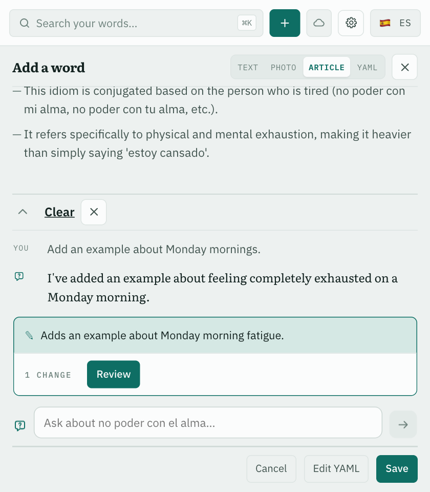

1 · Paste what you read →

Paste a word or a whole sentence. The phrase is worked out for you; name it only to settle a doubt. The sentence is kept as your own example.
2 · Read the generated entry →

Definition, translations, pronunciation and notes. Pictures, clips and recordings follow in the background once you save.
3 · Ask for changes

Talk to the draft: add or drop an example, question a translation. Each answer is a proposed edit to review.